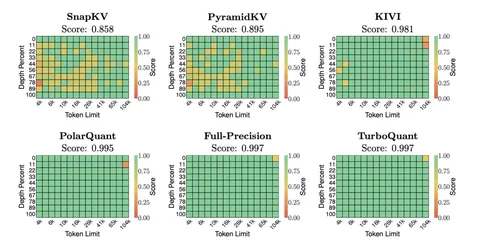

TurboQuant: Redefining AI efficiency with extreme compression
Обсудим небольшую статью от Google о новом способе квантования векторов для сжатия KV-кэшей. Она зафорсилась после публикации и обросла множеством домыслов. Сейчас, когда ажиотаж схлынул, попробуем разобраться, в чём её суть.
В отличие от классических подходов для сжатия KV-кэшей в статье рассматривают задачу квантизации векторов в общем виде. По сути, её свели к независимой квантизации отдельных компонент вектора.
Методов квантизации вещественных чисел много, но почему этого недостаточно?
При восстановлении векторов после квантизации важно получить не вектора в первоначальном виде, а сохранить свойства относительно их конфигурации в пространстве. В частности, хочется минимизировать ошибку нормы вектора и скалярного произведения между парами векторов до квантизации и после восстановления.
Как задачу квантизации вектора свести к независимой квантизации его отдельных компонент?
Наши вектора будут иметь равномерное распределение на единичном n-мерном шаре. Из этого следует, что при больших размерностях векторов каждая компонента распределена «почти нормально», а между собой они «нескореллированы и почти независимы». Предположения сильные, но сводят задачу к независимой квантизации отдельных компонент, где каждая хорошо распределена.
Для квантизации с учётом желаемых свойств авторы предлагают подход TurboQuant. Он состоит из двух алгоритмов, применяющихся к каждой компоненте вектора:
1) Минимизация дисторшена (норма разницы вектора в исходном виде и после восстановления) за счёт того, что каждая компонента распределена «почти нормально». По сути используется известный подход «квантование с порогами», где оптимальные «пороги» можно посчитать заранее и закодировать нужным количеством бит.
2) Несмотря на минимизацию дисторшена, в отдельных компонентах будет накапливаться ошибка восстановления. Это влияет на скалярные произведения между векторами — будут получаться смещённые значения. Для минимизации таких ошибок отдельно кодируют 1 битом «поправку» к каждой компоненте при помощи ранее разработанного алгоритма. И получают теоретическую гарантию, что оценка скалярного произведения не будет смещённой.
Это уже описано в статьях. Главное же новшество работы в том, что удалось объединить известные методы и теоретически обосновать, что такая комбинация даёт нужные свойства с минимизацией ошибок.
Для оценки TurboQuant авторы попробовали разные типы задач (сжатие KV-кешей для LLM, приближенный поиск векторов), где было заявлено, что алгоритм показал приемлемое качество при простой реализации с точки зрения вычислений.
На примере рассмотрим, как проверяли способы квантизации KV-кэшей для Llama-3.1-8B-Instruct на тесте Needle-In-A-Haystack. Для проверки модель должна восстанавливать скрытое предложение из последовательности с длинным контекстом. Способы квантизации, перечисленные на иллюстрации, справились хуже, а алгоритм TurboQuant без проблем прошёл его с учётом 4x сжатия. Эти результаты подтвердили теоретические выкладки: при квантовании методом TurboQuant нет существенных просадок по качеству.
Неужели всё так хорошо и TurboQuant — новый стандарт в индустрии? Есть нюансы:
🔴 Для достижения специального распределения векторов требуется, чтобы они были отномированы и умножены на случайную матрицу. Это может быть непрактичным с точки зрения вычислений для некоторых приложений.
🔴 Авторы заявляют что TurboQuant сжимает KV-кеши в 8 раз. Но в качестве бейзлайна берется формат fp32. Хотя в индустрии квантование в 4 или 8 бит — уже стандарт.
🔴 Методы сжатия KV-кешей, связанные с изменением архитектуры моделей, позволяют ценой качества сжать их сильнее и получить приросты несравнимые с квантизацией отдельных компонент вектора.
Революция пока не произошла, хоть после поста в блоге Google и наблюдалась просадка рыночных котировок производителей полупроводников. Но, возможно, авторы смогут эти подходы усилить — и стоит ждать новых практических результатов.
@RecSysChannel
Разбор подготовил❣ Александр Михеев
Обсудим небольшую статью от Google о новом способе квантования векторов для сжатия KV-кэшей. Она зафорсилась после публикации и обросла множеством домыслов. Сейчас, когда ажиотаж схлынул, попробуем разобраться, в чём её суть.
В отличие от классических подходов для сжатия KV-кэшей в статье рассматривают задачу квантизации векторов в общем виде. По сути, её свели к независимой квантизации отдельных компонент вектора.
Методов квантизации вещественных чисел много, но почему этого недостаточно?
При восстановлении векторов после квантизации важно получить не вектора в первоначальном виде, а сохранить свойства относительно их конфигурации в пространстве. В частности, хочется минимизировать ошибку нормы вектора и скалярного произведения между парами векторов до квантизации и после восстановления.
Как задачу квантизации вектора свести к независимой квантизации его отдельных компонент?
Наши вектора будут иметь равномерное распределение на единичном n-мерном шаре. Из этого следует, что при больших размерностях векторов каждая компонента распределена «почти нормально», а между собой они «нескореллированы и почти независимы». Предположения сильные, но сводят задачу к независимой квантизации отдельных компонент, где каждая хорошо распределена.
Для квантизации с учётом желаемых свойств авторы предлагают подход TurboQuant. Он состоит из двух алгоритмов, применяющихся к каждой компоненте вектора:
1) Минимизация дисторшена (норма разницы вектора в исходном виде и после восстановления) за счёт того, что каждая компонента распределена «почти нормально». По сути используется известный подход «квантование с порогами», где оптимальные «пороги» можно посчитать заранее и закодировать нужным количеством бит.
2) Несмотря на минимизацию дисторшена, в отдельных компонентах будет накапливаться ошибка восстановления. Это влияет на скалярные произведения между векторами — будут получаться смещённые значения. Для минимизации таких ошибок отдельно кодируют 1 битом «поправку» к каждой компоненте при помощи ранее разработанного алгоритма. И получают теоретическую гарантию, что оценка скалярного произведения не будет смещённой.
Это уже описано в статьях. Главное же новшество работы в том, что удалось объединить известные методы и теоретически обосновать, что такая комбинация даёт нужные свойства с минимизацией ошибок.
Для оценки TurboQuant авторы попробовали разные типы задач (сжатие KV-кешей для LLM, приближенный поиск векторов), где было заявлено, что алгоритм показал приемлемое качество при простой реализации с точки зрения вычислений.
На примере рассмотрим, как проверяли способы квантизации KV-кэшей для Llama-3.1-8B-Instruct на тесте Needle-In-A-Haystack. Для проверки модель должна восстанавливать скрытое предложение из последовательности с длинным контекстом. Способы квантизации, перечисленные на иллюстрации, справились хуже, а алгоритм TurboQuant без проблем прошёл его с учётом 4x сжатия. Эти результаты подтвердили теоретические выкладки: при квантовании методом TurboQuant нет существенных просадок по качеству.
Неужели всё так хорошо и TurboQuant — новый стандарт в индустрии? Есть нюансы:
Революция пока не произошла, хоть после поста в блоге Google и наблюдалась просадка рыночных котировок производителей полупроводников. Но, возможно, авторы смогут эти подходы усилить — и стоит ждать новых практических результатов.
@RecSysChannel
Разбор подготовил

536 просмотров · 29 реакций
Открыть в Telegram · Открыть пост на сайте